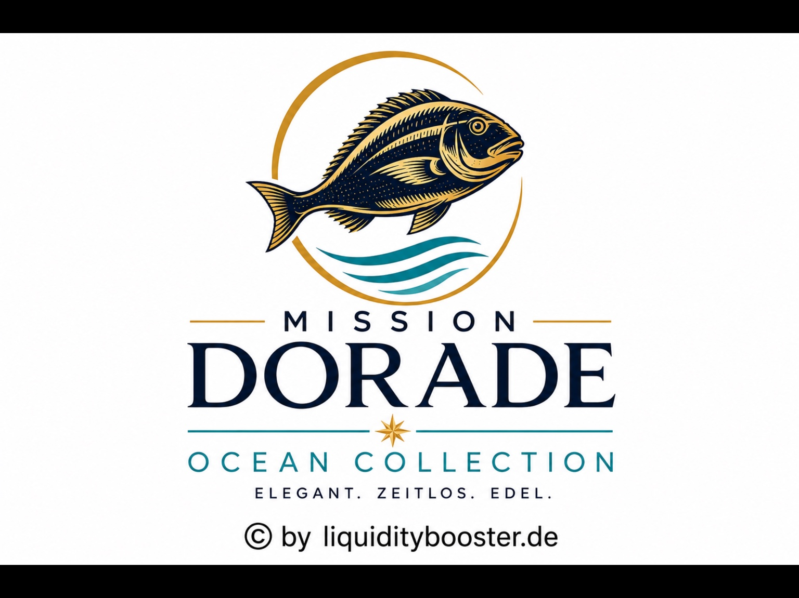
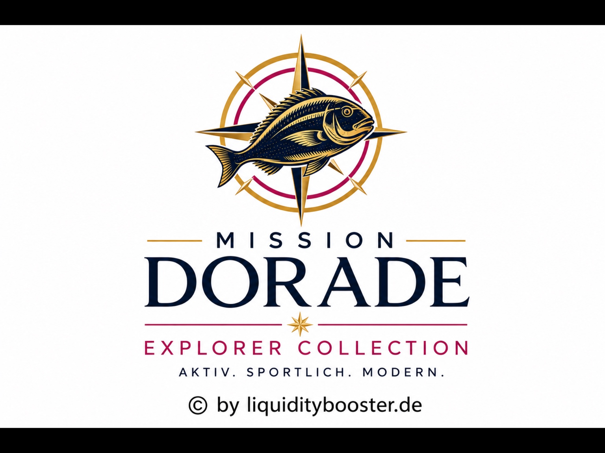
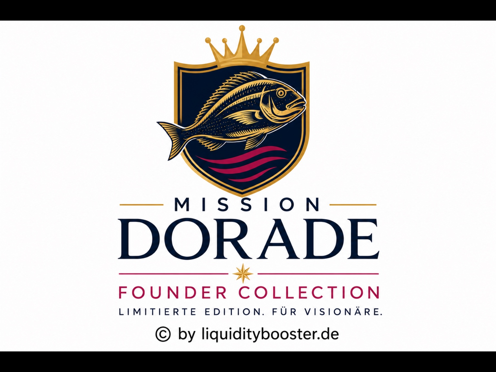
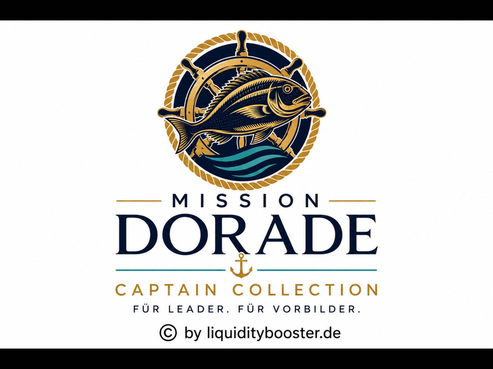

Eigener Aufbau
In Ebene 1 zählen ausschließlich die Club Partner, die Anna selbst aufgebaut hat.
Annas Weg zeigt, wie aus zwei eigenen Club Partnern Schritt für Schritt eine tragfähige Organisation entsteht – durch Konsequenz, Unterstützung und echte Befähigung.
Die Mission-Dorade-Karriere misst nicht Herkunft, Umsatz oder Geschwindigkeit. Sie zeigt sichtbar, welche Aufbauleistung du selbst erbracht hast und wie viele Menschen du dabei unterstützt hast, ebenfalls Verantwortung zu übernehmen.
In Ebene 1 zählen ausschließlich die Club Partner, die Anna selbst aufgebaut hat.
Ab Ebene 2 zählt, ob Anna ihre erste Linie erfolgreich beim eigenen Aufbau unterstützt.
Es ist nicht entscheidend, wann eine Stufe erreicht wird. Entscheidend ist, dass sie nachhaltig aufgebaut wurde.

Anna gewinnt ihre ersten beiden Club Partner selbst und begleitet sie beim Einstieg. Damit hat sie bewiesen, dass sie den ersten Schritt nicht nur verstanden, sondern praktisch umgesetzt hat.
„Jeder große Ozean beginnt mit den ersten beiden Wellen.“

Anna baut ihre erste Linie konsequent auf 24 eigene Club Partner aus. Die Zahl bildet die Mindestleistung von zwei neuen eigenen Club Partnern pro Monat über zwölf Monate ab.
„Wer den Weg kennt, kann ihn auch anderen zeigen.“

Jetzt geht es nicht mehr darum, dass Anna weitere Menschen allein gewinnt. Sie hilft ihren 24 Club Partnern dabei, jeweils zwei eigene Partner aufzubauen. So entstehen 48 Menschen in Annas zweiter Ebene.
„Erfolg wächst, wenn Menschen wachsen.“

Die 48 Menschen der zweiten Ebene bauen nun ebenfalls jeweils zwei eigene Club Partner auf. Anna begleitet nicht mehr nur einzelne Partner – sie entwickelt Menschen, die selbst Verantwortung übernehmen und andere führen.
„Wahre Führung bedeutet, andere zu befähigen, selbst Führung zu übernehmen.“
Eigene Partner in Ebene 1. Anna beginnt ihre Reise.
Eigene Partner in Ebene 1. Anna beweist Konsequenz.
Partner in Ebene 2. Anna befähigt ihre erste Linie.
Partner in Ebene 3. Anna entwickelt Führungskräfte.
Eine Karriere entsteht nicht dadurch, dass Anna immer mehr allein macht. Sie entsteht, weil durch Anna immer mehr Menschen selbst handeln können.
Jede Kollektion steht deshalb für einen nachweisbaren Entwicklungsschritt: vom eigenen Start über konsequenten Aufbau bis zur Fähigkeit, Menschen und Führungskräfte hervorzubringen.
Zurück zum Anfang